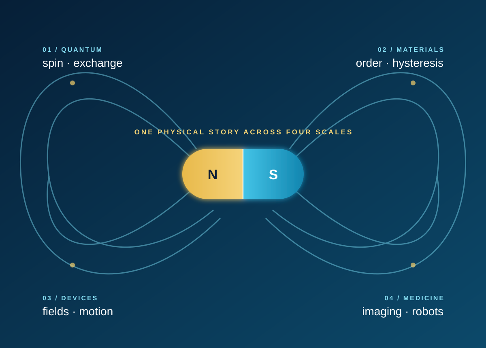

QUANTUM ORIGINS
Where magnetism begins
Spin, orbital motion, electronic structure, density of states, exchange and the Zeeman effect establish why atoms and solids carry magnetic moments.
ISDN 5600 · GRADUATE · SPRING 2026
A unified journey from the quantum origin of magnetic moments to the machines, imaging systems and medical robots they make possible.

THE CONNECTING QUESTION
Magnetism is often taught as separate formulas for materials, fields and devices. This course follows one continuous physical story. It begins with electron spin and exchange, asks how many moments organize inside real materials, develops models for fields and forces, and then uses those ideas to understand motors, data storage, MRI and magnetic robotic systems.
QUANTUM ORIGINS
Spin, orbital motion, electronic structure, density of states, exchange and the Zeeman effect establish why atoms and solids carry magnetic moments.
MATERIALS
Diamagnetism, paramagnetism, ferromagnetism, antiferromagnetism, superexchange and hysteresis connect microscopic interactions to measurable behaviour.
DEVICES
Lorentz force, induction, magnetic circuits, motors, actuators, magnetic coupling and data storage turn physical principles into engineered systems.
MEDICINE & ROBOTICS
MRI, diagnostics, microrobots, magnetic catheters and minimally invasive tools show why controllable remote force is valuable inside the body.
WHAT STUDENTS LEARN
Relate atomic and quantum descriptions to the behaviour of iron, oxides and other magnetic materials.
Use simplified models to estimate magnetic fields, forces, torques and material response.
Interpret hysteresis curves and common characterization data to identify key values and classify materials.
Estimate the performance of electromagnets, motors and coupled magnetic systems and justify design choices.
Examine how magnetic physics enables imaging, diagnosis, microrobotics and minimally invasive intervention.
Build a coherent technical argument from literature, physical models and system-level consequences.
THIRTEEN-WEEK ARC
Fields, moments, dipoles and the physical questions that connect the course.
Spin, orbitals, Schrödinger equation, density of states and the Zeeman effect.
Dia-, para-, ferro- and antiferromagnetism, superexchange, hysteresis and characterization.
Lorentz force, induction, magnetic circuits, actuators, coupling, wireless power and data storage.
Imaging, diagnostics, microrobots, magnetic catheters and minimally invasive surgery.
Group video presentations connect an emerging magnetic topic to its physical mechanism and engineering significance.
GROUP RESEARCH PROJECT
Teams select a current research topic, trace the mechanism from material or field physics to system behaviour, compare competing approaches and communicate the result as a concise technical video. The project tests whether students can connect equations and measurements to an argument about why a technology works and where its limits lie.